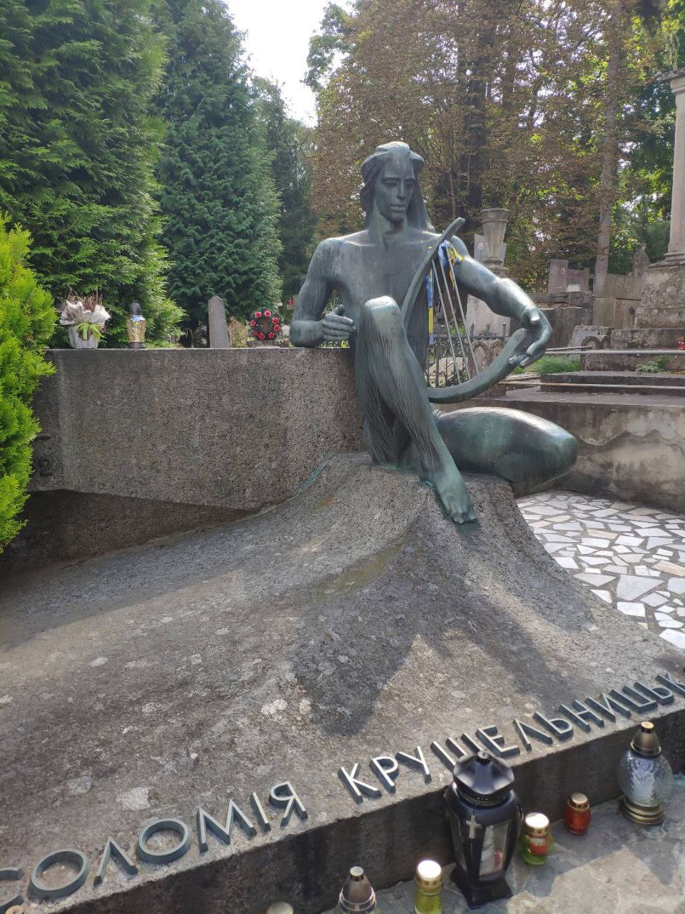

У перші десятиріччя XX .ст. на оперних сценах світу царювали чотири особи чоловічої статі:
І лише одна жінка спромоглася сягнути їх висот і стати врівень з ними. Нею була Соломія Крушельницька. Соломію Крушельницьку досі вважають неперевершеною оперною дівою, яка перетворювала кожну виставу на неповторне мистецьке явище, на те, що означали словом «тріумф». Про неї знав весь світ. Свої особисті концерти вона завжди закінчувала українськими народними піснями.
Народилася 23 вересня 1872 року в сім'ї греко-католицького священника у селі Білявинці на Тернопільщині.
Співати Соломія почала дуже рано й усі відзначали її виняткові здібності і дуже приємний голос
Крушельницька зачарувала своїм мистецтвом провідні оперні центри світу: Мілан, Рим і Неаполь, Париж і Ніцу, Санкт-Петербург, Краків і Варшаву, Одесу і рідний для неї Львів, Нью-Йорк, Буенос-Айрес і Сантьяго.
Родина російського імператора Миколи ІІ звернулася із проханням до Крушельницької дати концерт у царському палаці. Співачка погодилася. Протягом вечора вона співала для царської родини та гостей арії з відомих опер різними мовами, а на завершення концерту заспівала кілька українських народних пісень. Царю Миколі ІІ так сподобалися пісні, що він запитав Соломію Крушельницьку, якою це мовою вона співала і про що в них розповідається. Співачка відповіла французькою. Оповівши зміст пісень, вона наголосила, що це пісні її рідною мовою – українською.
"
Після смерті чоловіка у 1936 році, Соломія Крушельницька у 1939 році поїхала в Галичину провідати рідних і тут її застала Друга світова війна. До Західної України прийшли «совєти», і велика артистка, яку знав весь світ, стала «заручницею» нової влади. Соломія Крушельницька ще восени 1903 року році купила у Львові будинок і володіла ним до приходу Червоної армії. Радянська влада націоналізувала помешкання артистки, залишивши їй квартиру на другому поверсі, в якій вона жила зі своєю сестрою Анною. Під час німецької окупації Львова Крушельницька так бідувала, що вимушена була давати приватні уроки вокалу. Соломія Крушельницька померла від раку 16 листопада 1952 року і похована на Личаківському кладовищі поруч із могилою Івана Франка.

P.S.: Подруга Соломії Негріта да П’яцціні, донька директора театру у
Буенос-Айресі згадувала: «Жоден диригент
ніколи не робив їй ніяких
практичних зауважень, визнаючи її неперевершеність. Зате до порад і думок
великої Соломії
прислухалися навіть видатні диригенти і співаки…»